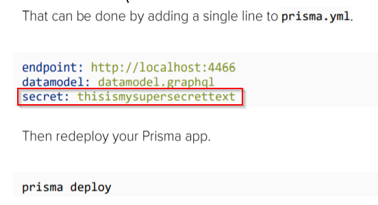

Now, doing the above steps will lockdown prisma api from the outside world. i.e. only our node.js API can now access this graphQL API
Still if you need to access the
prisma API from a single host
then you can do the following :